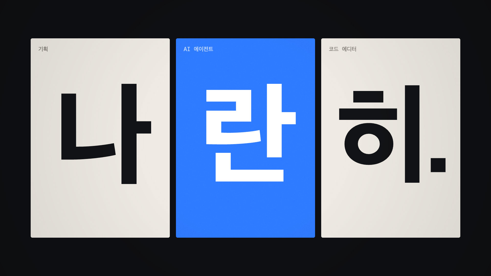
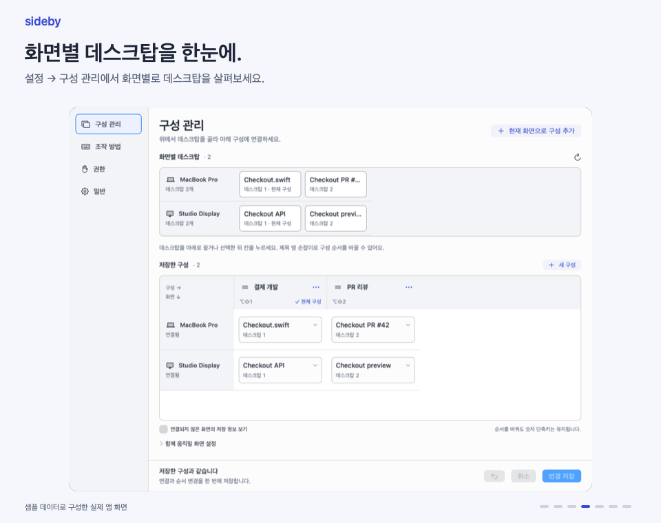
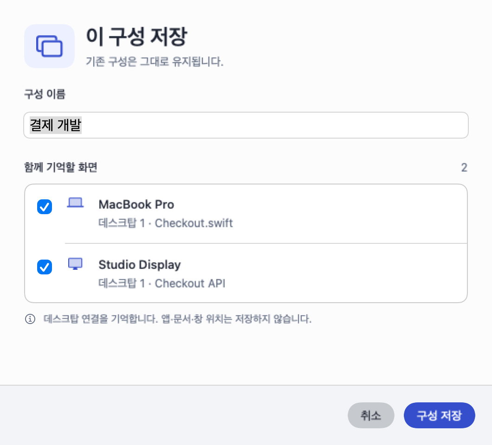
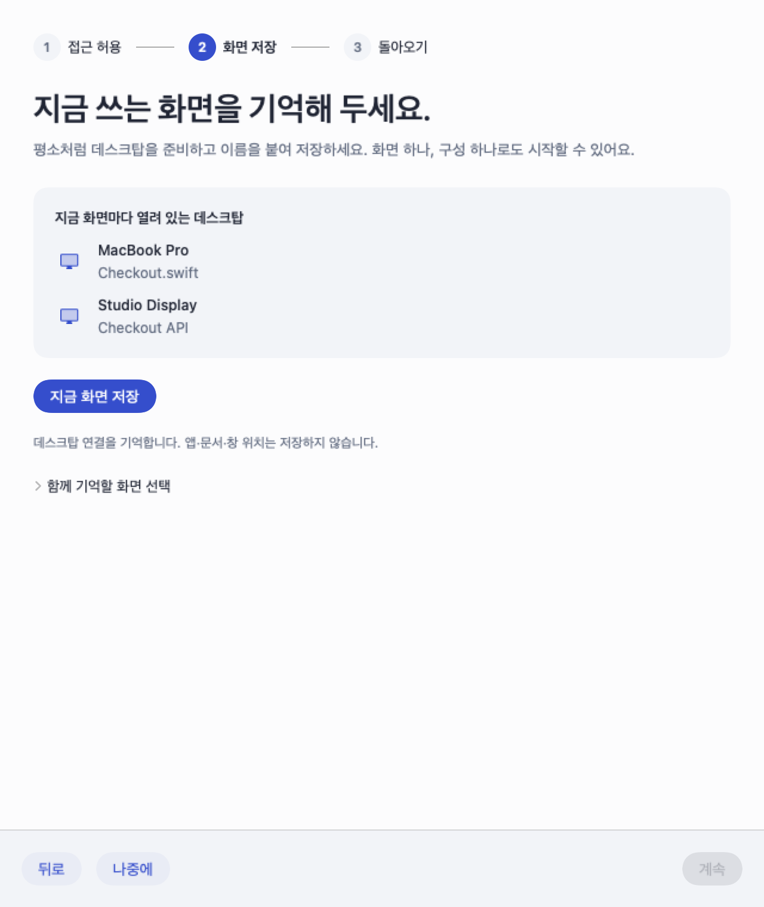
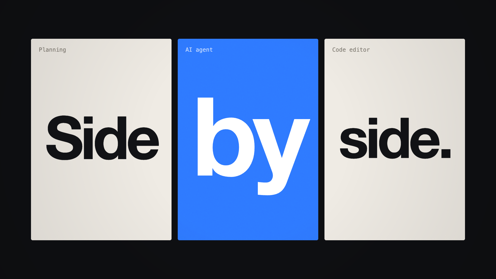
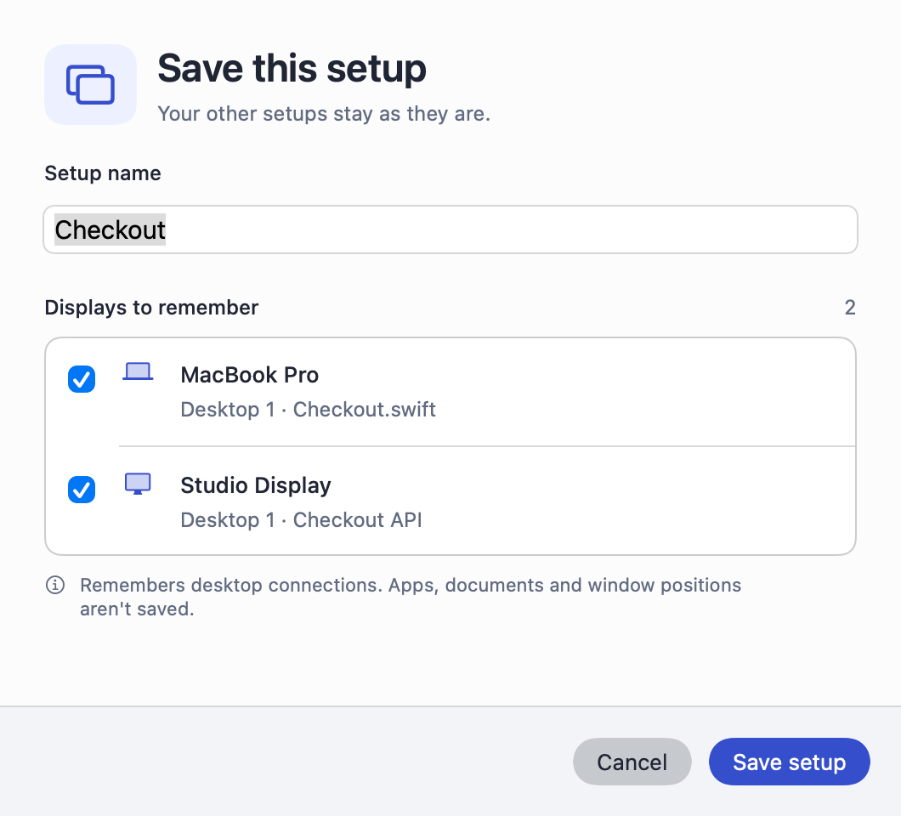
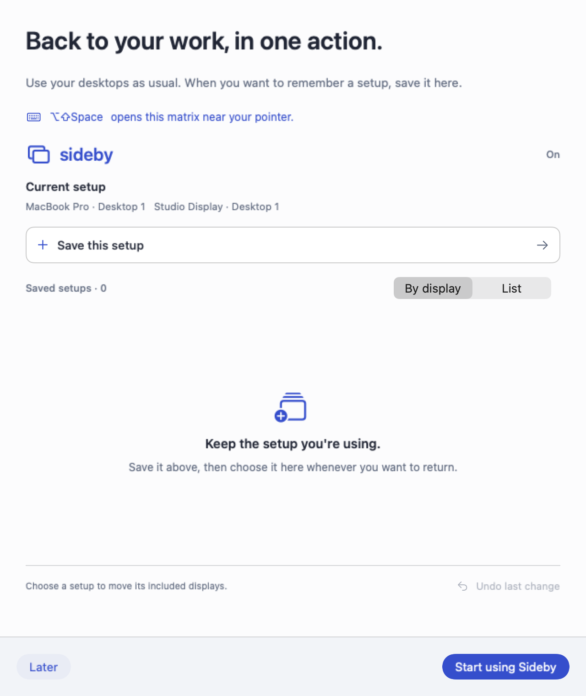

Sideby · 0.13.0
지금 쓰는 구성을 기억하고, 하던 일로 돌아가세요.

새 구성 저장 흐름을 담은 18.75초 모션그래픽 미리보기입니다. 데스크탑과 저장 창은 가상 데이터로 그렸으며 실제 전환 속도를 측정한 영상이 아닙니다.
평소처럼 일하다가 기억하고 싶은 구성을 저장하세요. 다음에 그 구성을 고르면 포함한 화면들이 함께 이동합니다.
정지 이미지 · GIF 원본
Sideby 다운로드 · macOS 14 이상 · 한국어·영어 지원
일하다가 그대로 저장하세요
실제 앱 화면으로 저장 흐름 보기

한국어 안내 재생 · English walkthrough
- ⌥⇧Space를 누른 채 이 구성 저장을 고릅니다.
- 키를 놓고 이름과 함께 기억할 화면을 확인한 뒤 저장합니다.
- 다시 필요할 때 구성을 고르거나 ⌥⇧Tab으로 직전 구성에 돌아옵니다.

 샘플 데이터로 렌더링한 실제 앱 화면입니다. 연결된 화면만 매트릭스에 표시하며, 기존 구성은 편집에서 하나씩 변경합니다.
샘플 데이터로 렌더링한 실제 앱 화면입니다. 연결된 화면만 매트릭스에 표시하며, 기존 구성은 편집에서 하나씩 변경합니다.
첫 구성 안내와 설정


English preview and screenshots

Play the English promotional film




설치 방법과 전체 사용 안내는 한국어·영어 README에서 확인할 수 있습니다.